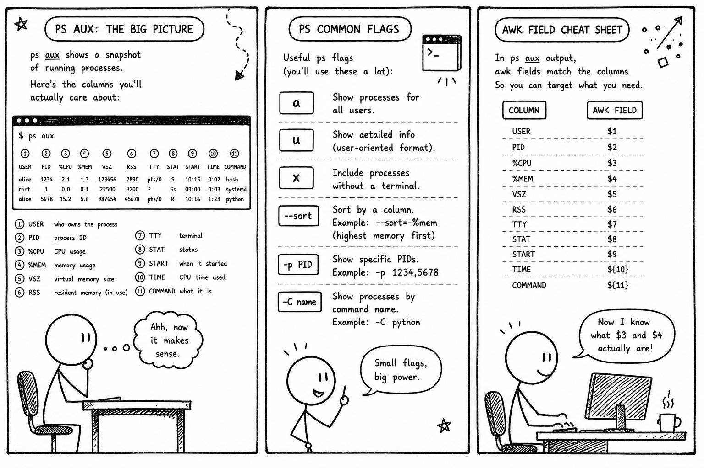

Hand-drawn field notes on ffmpeg, gstreamer, sed, awk, find, tree, jtop, and mediainfo. Free to read, blue by design.
est. 2026 · all blue, all the timeThe big picture on ps aux, the flags you actually use, and which awk field maps to which column.
